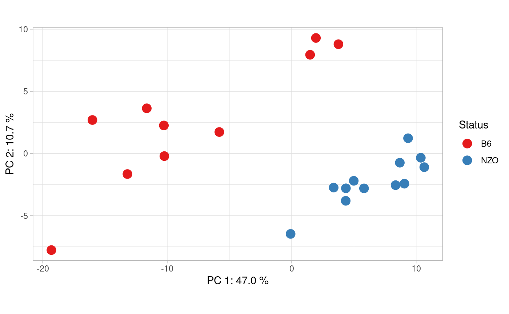
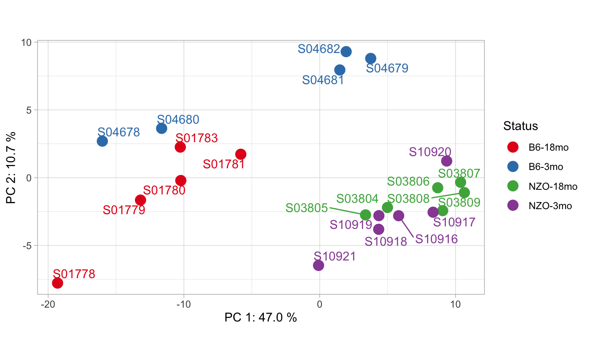
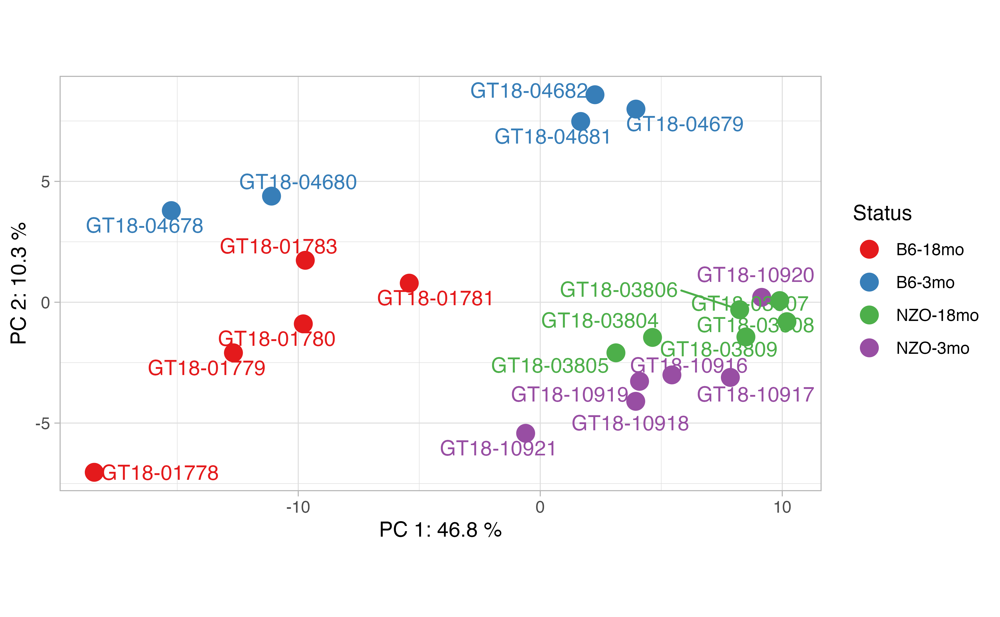
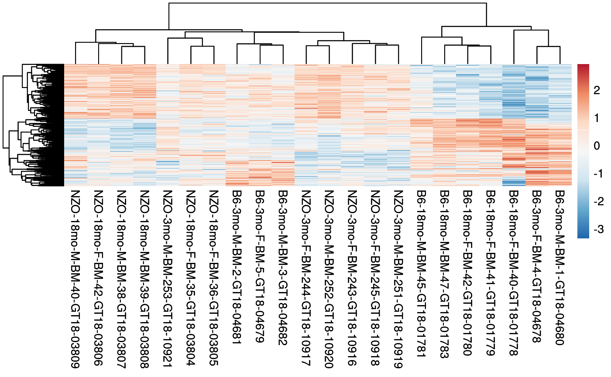

Bed formatted consensus matrix (chr, start, end and samples)
dim(bed)
## [1] 1000 25# bed formatted file head(bed[,1:4])
## Chr Start End B6-18mo-M-BM-47-GT18-01783
## 52834 chr5 24841478 24845196 1592
## 29780 chr17 8162955 8164380 109
## 67290 chr8 40577584 40578029 72
## 51295 chr4 145277698 145278483 110
## 4267 chr1 180808752 180815472 2452
## 45102 chr3 88732151 88732652 49Create the contrasts you want to compare, here we create contrasts for 22 mice samples from different strains.
# create contrast vector which will be compared. contrasts<- c("B6", "B6", "B6", "B6", "B6", "NZO", "NZO", "NZO", "NZO", "NZO", "NZO", "B6", "B6", "B6", "B6", "B6", "NZO", "NZO", "NZO", "NZO", "NZO", "NZO")
cinaR function directly computes the differentially accessible peaks.
# If reference genome is not set hg38 will be used! results <- cinaR(bed, contrasts, reference.genome = "mm10")
## >> preparing features information... 2020-10-22 11:42:47
## >> identifying nearest features... 2020-10-22 11:42:49
## >> calculating distance from peak to TSS... 2020-10-22 11:42:49
## >> assigning genomic annotation... 2020-10-22 11:42:49
## >> assigning chromosome lengths 2020-10-22 11:43:14
## >> done... 2020-10-22 11:43:14
## >> Method: edgeR
## FDR: 0.05 & abs(logFC)< 0
## >> Estimating dispersion...
## >> Fitting GLM...
## >> DA peaks are found!
## >> Human gene symbols are converted to mice!
## >> Enrichment results are ready...
## >> Done!Now, you can access differential accessibility (DA) and enrichment results.
names(results)
## [1] "DA.results" "Enrichment.Results"Inside DA.results, you have the consensus peaks (cp) and differentially accessible (DA) peaks. If batch correction was run, then cp will be a batch-corrected consensus matrix, otherwise it is the original one you provided.
names(results$DA.results)
## [1] "cp" "DA.peaks"There are many information cinaR provides such as adjusted p value, log fold-changes, gene names etc for each peak:
colnames(results$DA.results$DA.peaks$B6_NZO)
## [1] "Row.names" "seqnames" "start" "end"
## [5] "width" "strand" "annotation" "geneChr"
## [9] "geneStart" "geneEnd" "geneLength" "geneStrand"
## [13] "geneId" "transcriptId" "distanceToTSS" "gene_name"
## [17] "logFC" "FDR"Here is an overview of those DA peaks:
head(results$DA.results$DA.peaks$B6_NZO[,1:5])
## Row.names seqnames start end width
## 1 chr1_134559439_134560787 chr1 134559439 134560787 1349
## 2 chr1_138158514_138159483 chr1 138158514 138159483 970
## 3 chr1_164247654_164251852 chr1 164247654 164251852 4199
## 4 chr1_171631196_171631780 chr1 171631196 171631780 585
## 5 chr1_173954537_173955745 chr1 173954537 173955745 1209
## 6 chr1_177935969_177936852 chr1 177935969 177936852 884Since the comparison is
B6_NZO, if fold-changes are positive it means they are more accesible in B6 compared to NZO and vice versa for negative values!
and here is a little overview for enrichment analyses results:
## module.name overlapping.genes adj.p
## 1 Myeloid lineage 1 PLXNC1,GM2A,AGTPBP1,CTSB,TFEB,FBXL5 0.06455975
## 2 U_metabolism/replication PECAM1,GM2A,CTSB,SLC2A6 0.06455975
## 3 U_mitochondrial proteins PTPRC,MAP4K4,PIK3R1,PAQR3,UBE3A 0.35904401
## 4 U_proteasome/ubiquitin cx PTPRC,PIK3R1,IREB2 0.38443203
## 5 U_cAMP/NF-KB activation RUNX1,RUNX1,ETS2,CCNG2 0.38443203
## 6 U_Immunity/cytoskeleton RPS6,RPS19 0.57910579You can easily get the PCA plots of the samples:
pca_plot(results, contrasts, show.names = F)

You can overlay different information onto PCA plots as well!
# Overlaid information overlaid.info <- c("B6-18mo", "B6-18mo", "B6-18mo", "B6-18mo", "B6-18mo", "NZO-18mo", "NZO-18mo", "NZO-18mo", "NZO-18mo", "NZO-18mo", "NZO-18mo", "B6-3mo", "B6-3mo", "B6-3mo", "B6-3mo", "B6-3mo", "NZO-3mo", "NZO-3mo", "NZO-3mo", "NZO-3mo", "NZO-3mo", "NZO-3mo") # Sample IDs sample.names <- c("S01783", "S01780", "S01781", "S01778", "S01779", "S03804", "S03805", "S03806", "S03807", "S03808", "S03809", "S04678", "S04679", "S04680", "S04681", "S04682", "S10918", "S10916", "S10919", "S10921", "S10917", "S10920")
pca_plot(results, overlaid.info, sample.names)

You can also plot most variable 100 peaks for all samples:
heatmap_plot(results)

Plus, you can set the number of peaks to be used in these plots, and also you can change the additional arguments of pheatmap function. For more information check out ?pheatmap.
heatmap_plot(results, heatmap.peak.count = 200, cluster_cols = F)

Note that you can further divide the resolution of contrasts, for instance this is also a valid vector
contrasts <- sapply(strsplit(colnames(bed), split = "-", fixed = T), function(x){paste(x[1:4], collapse = "-")})[4:25] unique(contrasts)
## [1] "B6-18mo-M-BM" "B6-18mo-F-BM" "NZO-18mo-F-BM" "NZO-18mo-M-BM"
## [5] "B6-3mo-F-BM" "B6-3mo-M-BM" "NZO-3mo-F-BM" "NZO-3mo-M-BM"in this case, each of them will be compared to each other which will result in 28 different comparisons.
You can run the enrichment analyses with a custom geneset:
cinaR(..., geneset = new_geneset)
geneset must be a .gmt formatted symbol file. You can download different genesets from this site.
You can use
read.gmtfunction fromqusagepackage to read genesets into your current environment.
Also, you can familarize yourself with the format by checking out :
# default geneset to be used data("VP2008")
For now, cinaR supports 3 genomes for human and mice models:
hg38hg19mm10You can set your it using reference.genome argument.
If you suspect your data have unknown batch effects, you can use:
cinaR(..., batch.correction = T)
This option will run Surrogate Variable Analysis (SVA) and try to adjust your data for unknown batch effects. If however, you already know the batches of the samples, you can simply set the batch.information argument as well:
# batch information should be number a vector where # the length of it equals to the number of samples. cinaR(..., batch.correction = T, batch.information = c(rep(0, 11), rep(1,11)))
Reminder - In our example data we have 22 samples
Setting save.DA.peaks = TRUE in cinaR function will create a DApeaks.xlsx file in the current directory. This file includes all the comparisons in different tabs. Additionally, you can set the path/name of the file using DA.peaks.path argument after setting save.DA.peaks = TRUE.
For instance,
results <- cinaR(..., save.DA.peaks = T, DA.peaks.path = "./Peaks_mice.xlsx")
will create an excel file with name Peaks_mice.xlsx in the current directory.
Currently, cinaR supports 4 different algorithms, namely;
If not set, it uses edgeR for differential analyses. You can change the used algorithm by simply setting DA.choice argument. For more information, ?cinaR
# new FDR threshold for DA peaks results <- cinaR(..., DA.fdr.threshold = 0.1) # filters out pathways results <- cinaR(..., enrichment.FDR.cutoff = 0.1) # does not run enrichment pipeline results <- cinaR(..., run.enrichment = FALSE) # creates the piechart from chIpSeeker package results <- cinaR(..., show.annotation.pie = TRUE) # change cut-off value for dot plots dot_plot(..., fdr.cutoff = 0.05)
Robinson MD, McCarthy DJ, Smyth GK (2010). “edgeR: a Bioconductor package for differential expression analysis of digital gene expression data.” Bioinformatics, 26(1), 139-140. doi: 10.1093/bioinformatics/btp616.
Ritchie ME, Phipson B, Wu D, Hu Y, Law CW, Shi W, Smyth GK (2015). “limma powers differential expression analyses for RNA-sequencing and microarray studies.” Nucleic Acids Research, 43(7), e47.
Love, M.I., Huber, W., Anders, S. (2014) Moderated estimation of fold change and dispersion for RNA-seq data with DESeq2. Genome Biology, 15:550. 10.1186/s13059-014-0550-8